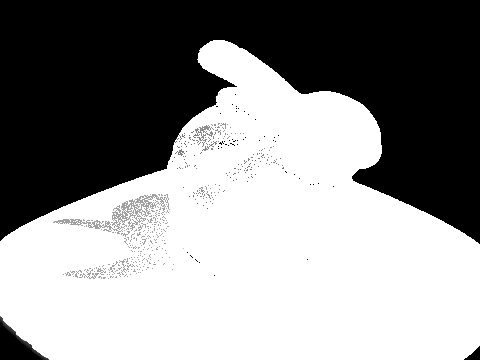
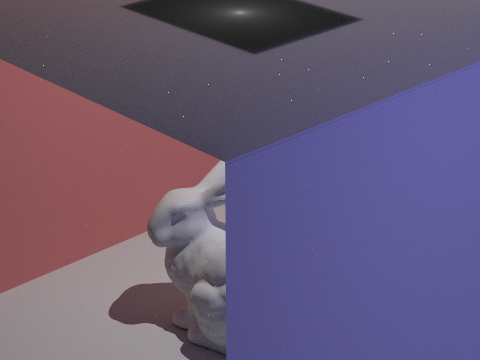
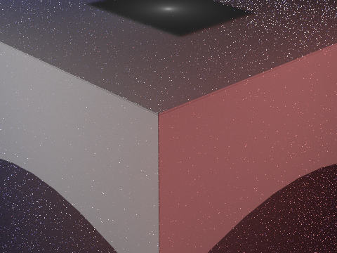
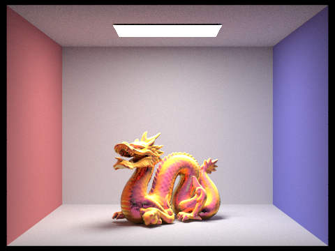
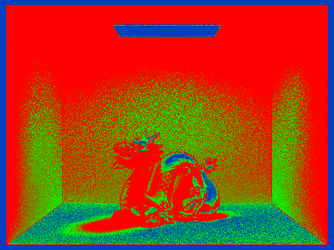
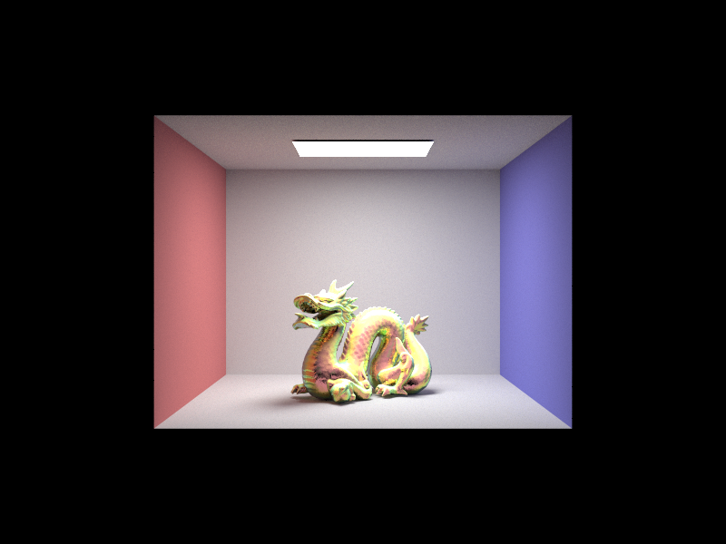

CS184 · 3.1A Milestone Report
Group: Crystal LaMar, Kellen Galban, Isaac Jones, Sofia Valadez
Website: CS184 Final Project Webpage
Slides: Milestone presentation deck
Video: Milestone progress video
Because the RGB path tracer from Homework 3 could not simulate thin-film interference, we created a Color Vector class to replace Vector3D. This new class stores a spectral representation with 40 discrete wavelength samples from 400nm to 800nm.
We refactored functions in pathtracer.cpp so color data is carried as a ColorVector through ray bounces, and only collapsed to RGB at raytrace_pixel.
We modified raytracing algorithms so the newly implemented ColorVector values are used during bounce computations instead of RGB channel math.
To simulate iridescent patterns from light reflecting through thin transparent layers, we created a new ThinFilm BSDF. Key functions include calculate_phase_shift(), which computes forward shift as rays enter the film, and evaluate_interference(), which accounts for per-wavelength behavior in accordance with Snell's Law.
Our renderer now produces initial iridescence-like effects and validates that the spectral pipeline is functioning end-to-end. The current visuals show that wavelength-aware bounces and thin-film calculations are influencing final color output.






Relative to our original plan, we made strong progress on core technical infrastructure (spectral color representation, bounce updates, and BSDF implementation). The current bottleneck is realism of translucency and scene quality rather than missing core features.
.dae files and scene files suited to current testing.